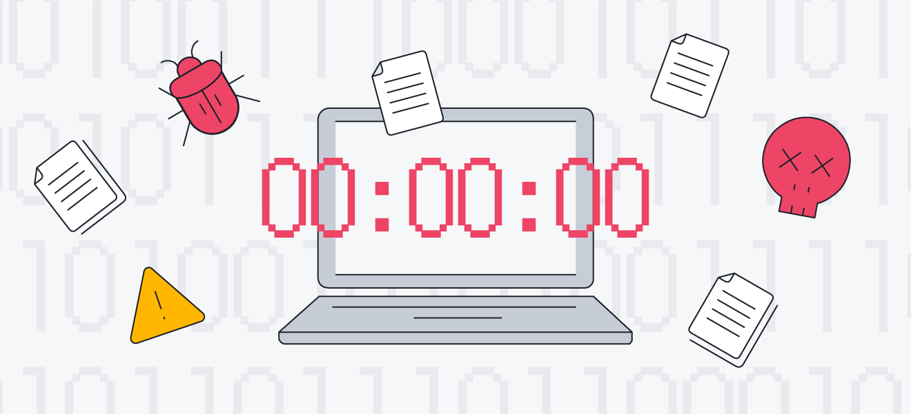
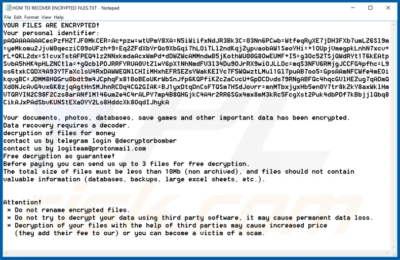
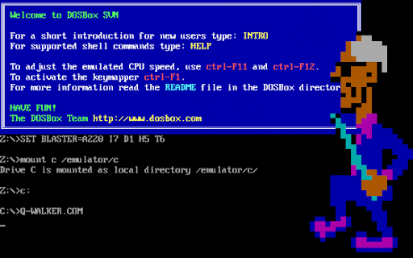

¿Qué es el adware?

El adware, o software publicitario, es un tipo de software que muestra anuncios en forma de banners, ventanas emergentes o anuncios de texto dentro de una aplicación o en el navegador web del usuario. El propósito principal del adware es generar ingresos para sus desarrolladores mostrando publicidad a los usuarios.
A menudo, el adware se instala en los dispositivos de los usuarios junto con otro software descargado de internet. A veces, los usuarios pueden instalar adware sin darse cuenta al aceptar términos y condiciones durante la instalación de otro programa.
¿Como se propagan?
- El método más común de propagación de adware es a través del empaquetado con software gratuito. Cuando los usuarios descargan e instalan programas gratuitos de sitios web no oficiales o de dudosa reputación, es posible que también instalen adware sin darse cuenta. El adware suele incluirse como una opción durante el proceso de instalación del software gratuito y puede estar preseleccionado para instalarse automáticamente si los usuarios no desmarcan la opción. 2. Descargas desde sitios web no confiables
- Los usuarios pueden encontrarse con adware al descargar contenido, como música, películas, juegos o aplicaciones, desde sitios web no confiables o de intercambio de archivos peer-to-peer (P2P). Estos sitios a menudo incluyen software malicioso, incluido el adware, que se descarga junto con el contenido deseado. 3. Ventanas emergentes y anuncios engañosos
- Algunos tipos de adware utilizan técnicas engañosas, como ventanas emergentes falsas que simulan mensajes de error o alertas de seguridad. Los usuarios pueden hacer clic en estos anuncios pensando que están cerrando una ventana emergente legítima, pero en realidad están instalando adware en su dispositivo.


Riesgos y consecuencias
¿Como protegerse?
- Instala y mantén actualizado un software antivirus confiable en tu dispositivo. Descargar software solo de fuentes confiables
- vita descargar software de sitios web no oficiales o de dudosa reputación. Leer cuidadosamente los términos de instalación
- Presta atención durante el proceso de instalación de software y lee cuidadosamente los términos y condiciones. Actualizar regularmente el software
- Mantén actualizado el sistema operativo de tu dispositivo, así como todas las aplicaciones y programas instalados.
- Es importante estar atentos a los signos de posibles infecciones de malware.
- Hacer copias de seguridad regulares de los datos importantes para minimizar la pérdida en caso de ataque.

conclusiones y recomendaciones
